|
Publicado em 21/03/2006

Uma nova fronteira

| Veja abaixo sketchs inéditos de "New Frontier", enviados ao Trek Brasilis com exclusividade pelo artista Mike Collins! Clique na imagem para aumentá-la. | |
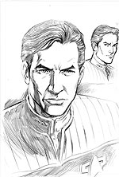 | |
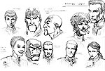 | |
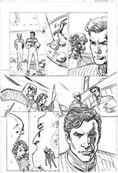 | |
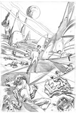 | |
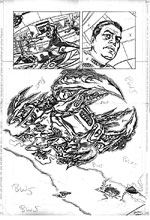 | |
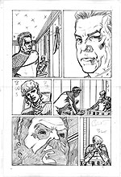 | |
| por
Gustavo Leo
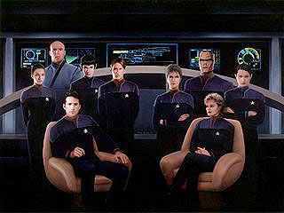 Criado pelo cultuado autor Peter David e pelo editor da Pocket Books John Ordover em 1997, o seriado um marco no universo literrio de Jornada e deu origem a 20 livros e uma graphic novel (at agora), com um sucesso de vendagem que rivaliza os best-sellers de A Nova Gerao e da saga do Shatnerverse, de William Shatner. Peter David, para quem no sabe, um prestigiado autor de histrias em quadrinhos e literatura de fico-cientifica, j tendo revolucionado personagens dos quadrinhos, como o Hulk, Homem-Aranha, Aquaman e o novo Capito Marvel. dele tambm a autoria de livros de Jornada com a tripulao de A Nova Gerao, que se tornaram best-sellers favoritos dos leitores, como Imzadi, Vendetta e Q-Squared. Ento, ele e Ordover estavam mais do que preparados para criar o universo de Star Trek - New Frontier. A srie sucesso tambm em audiobooks, todos eles lidos pelo ator Joe Morton, dos filmes de fico-cientfica "Exterminador do Futuro 2" e "Ameaa Invisvel". Um
bom ano para toda a franquia foi 1997. O filme Primeiro Contato estava
gozando de boa bilheteria no mundo inteiro, inclusive no Brasil.
Voyager fazia boa audincia para a rede UPN, com a
introduo dos Borgs na e da personagem
Seven of Nine, vivida pela linda atriz Jeri
Ryan. E Deep
Space Nine, para delrio dos fs, chegava ao pice da
Guerra Dominion em sua sexta temporada
para muitos, uma das melhores temporadas de Jornada j
produzidas. You gotta love it! J Star Trek New Frontier trazia para os leitores as aventuras inditas da nave estelar da classe Ambassador USS Excalibur NCC-26517, mantendo o tom pico e personagens interessantes que recheiam o melhor de Jornada na televiso e no cinema. Mackenzie Calhoun (cujo verdadeiro nome M'k'n'zy de Calhoun) um jovem rebelde do planeta Xenex que liderou e libertou sua raa da escravido, e que sob a tutela do jovem capito Jean-Luc Picard, da USS Stargazer, entra na Academia da Frota e tem uma carreira brilhante como oficial at que, anos mais tarde, recebe o comando da nave Excalibur (a mesma nave j havia aparecido numa pequena ponta, sob o comando do comandante Riker no episdio Redemption, Part II da quinta temporada de A Nova Gerao). Calhoun substituiu o capito Morgan Korsmo, que perdeu a vida na batalha com o cubo Borg que ameaava a Terra no filme First Contact. Com sua caracterstica cicatriz no lado direito do rosto e a pitoresca espada dos tempos de guerreiro em Xenex, Calhoun um capito audaz e desafiador, sempre criando problemas para a Frota Estelar por causa de seu temperamento explosivo. Juntam-se tripulao da nave a primeira oficial comandante Elizabeth Paula Shelby (mesma personagem que a interpretada pela atriz Elizabeth Dennely no clssico episdio-duplo The Best of Both Worlds, de A Nova Gerao), a Vulcana oficial-mdica Doutora Selar (interpretada por Suzie Plakson no episdio The Schizoid Man, da mesma srie), a tenente Robin Lefter (interpretada por uma ento desconhecida Ashley Judd nos episdios Darmok e The Game), o monstruoso chefe de segurana tenente Zak Kebron, a oficial de cincias meio Vulcana/meio Romulana Soleta, o andrgeno hermatiano engenheiro-chefe tenente-comandante Burgoyne 172, o ex-prncipe Thalloniano Si Cwan e o misterioso navegador tenente Mark McHenry. A seguir, vai um breve resumo dos livros criados para a srie, incluindo alguns spoilers. Infelizmente, os livros permanecem inditos no Brasil, por isso, se voc no os tem em sua coleo, v correndo a uma loja de importados real ou virtual mais prxima e traga para o seu cnon pessoal as misses da Excalibur. Eu j fiz isso. 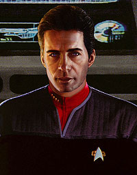 Comea a saga de Star Trek New Frontier numa mini-srie de quatro livros. O capito Calhoun recebe o comando da reformada USS Excalibur e parte para o desconhecido setor 221-G. Controlado durante centenas de anos pelo ento glorioso Imprio Thalloniano, o setor agora se encontra livre e em colapso, com centenas de planetas em rota de auto-destruio. A misso da Excalibur ajudar no que puder e tentar trazer ordem ao caos. Fazem participaes especiais o capito Picard e o embaixador Spock. A aventura inicial de Calhoun e sua tripulao continua nos livros Into The Void, The Two-Front War e End Game. Martyr (1998) Com a queda do Imprio Thallosiano, a guerra civil ameaa o planeta Zondar. A chegada da Excalibur comemorada com alvio pela populao do planeta e seu capito nomeado um profeta salvador, mas Calhoun acaba capturado por uma faco extremista e resta ao engenheiro-chefe Burgoyne a tarefa de salv-lo antes que a frota inimiga comece uma guerra santa contra a Federao. Fire on High (1998) revelada a presena de Norman Lefter, a misteriosa me da Tenente Lefter, dada como morta anos antes. Presa em um planeta no espao Thalloniano, Norman traz consigo o segredo de uma arma capaz de exterminar planetas inteiros. Com milhes de vidas em risco, o capito Calhoun ordena que a Excalibur entre no espao do catico Imprio Thalloniano de novo e esta vez pode ser a ltima. Once Burned (1998) 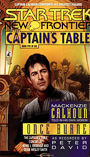 Double Helix Doubl or Nothing (1999) Um crossover de New Frontier com A Nova Gerao, parte da mini-srie de livros Doubl Helix, de A Nova Gerao. O capito Calhoun se une a Picard e a tripulao da Enterprise-E, numa tentativa de impedir que uma mortal arma biolgica destrua o Quadrante Alfa. Milhes j morreram, incluindo Romulanos, Cardassianos, Bajoranos e membros de centenas de raas da Federao. Podero os dois capites impedir o massacre? The Quiet Place (1999) Desde a queda do Imperio Thalloniano, Si Cwan est em busca de sua irm desaparecida. No planeta Montos, uma jovem perseguida pelos traioeiros Rendeemers, que buscam o segredo da localizao de um planeta mstico conhecido como The Quiet Place. Ser Riella mesmo a irm de Si Cwan? Antes que ele possa descobrir, a Excalibur alvo dos mortferos Ces de Guerra e sugada para o corao do Quiet Place. Dark Allies (1999) 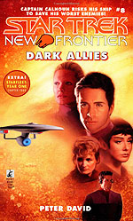 Excalibur Book One : Rquiem (2000) Comea a Trilogia Excalibur. Com a destruio de sua nave e a morte do capito, os ex-tripulantes da Excalibur seguem com suas vidas, cada um seguindo seu prprio caminho. Soleta se rene com seu pai Romulano e Zak Kebron e McHenry so enviados numa misso secreta para investigar misteriosas abdues aliengenas em um planeta primitivo. Excalibur Book Two : Renaissance (2000) Com a destruio da Excalibur e a morte de Calhoun, as aventuras de seus ex-tripulantes continuam. A Doutora Selar retorna a Vulcano para criar o filho recm-nascido. Mas o pai do beb, o andrgeno engenheiro-chefe Burgoyne, est disposto a lutar pela custdia da criana e desafiar at a lendria lder Vulcana TPau. Enquanto isso, Robin Lefter e sua me vo para o planeta Risa, onde encontram uma verdadeira lenda da Frota Estelar o capito Montgomery Scott. Excalibur Book Three : Restoration (2000) Surpresa! Mackenzie Calhoun no morreu na exploso da Excalibur e passou os ltimos meses no primitivo planeta Yabaka. Na concluso da trilogia, Calhoun volta dos mortos para a surpresa de todos e se casa com Shelby numa cerimnia celebrada por ningum menos que Jean-Luc Picard. De presente, ele recebe da Frota Estelar a nova USS Excalibur-A, da classe Galaxy (sim, a mesma classe da Enterprise-D), e Shelby recebe seu primeiro comando, a USS Trident. Juntas, as duas naves partem para onde ningum jamais esteve. No um dos melhores livros da srie, mas traz um enciclopdia sobre os personagens, planetas, naves, enfim, tudo sobre New Frontier. Double Time (Graphic Novel) (2001)
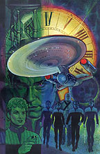 Gateways Cold Wars (2001) A raa conhecida como Iconianos (do episdio Contagion, do segundo ano de A Nova Gerao), mestres criadores de portais interdimensionais que se estendem por toda a galxia, retornaram aps milnios adormecidos. Seus portais esto reescrevendo o mapa da galxia e causando total destruio. Cabe ao capito Calhoun e capit Shelby arriscar tudo para salvar aquele setor da galxia. Being Human (2001) 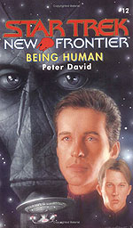 Gods Above (2003) Seres que se dizem deuses, j venerados pelos gregos e romanos da Antiguidade, retornam para oferecer paz e harmonia galxia. Mas a Frota Estelar, na pessoa de Calhoun, recusa a oferta. O resultado deixa a nova Excalibur-A e a Trident em pedaos e o navegador Mark McHenry em coma profundo. Cahoun e toda a Federao ficam impotentes frente aos novos deuses. Como sair dessa? No Limits (2003)
Coletnea de contos por vrios autores de aventuras de Calhoun
e companhia. O prprio Peter David conta a histria da lua-de-mel
de Calhoun e Shelby no planeta Xenex. Outros autores presentes na coletnea incluem Keith
R.A. DeCandido, Susan Wright,
Josepha Sherman,
Ilsa J. Bick, Kevin Dilmore, Christina F. York, Robert
T. Jeschonek, Peg
Robinson, Mary Scott-Wiecek, Allyn Gibson, e Glenn Hauman &
Lisa Sullivan. Com cada conto centrado
em um personagem, No Limts puro
bom entretenimento. Stone and Anvil (2004) Ocorre um assassinato a bordo da USS Trident e todas as evidncias apontam para o alferes Janos, da Excalibur. Calhoun faz de tudo para inocentar seu oficial, mas a crise diplomtica causada logo cresce e pode afetar todo o setor, colocando Calhoun contra a capit Shelby, contra a Frota Estelar e contra a prpria nave U.S.S Enterprise-E, de Jean-Luc Picard. After the Fall (2005) Trs anos se passaram desde os eventos de Stone and Anvil. Shelby foi promovida a almirante e a Trident tem um novo capito. Si Cwan agora primeiro ministro do novo Governo Thalloniano e cabe Excalibur, Trident e toda a frota thalloniana trazer ordem ao setor 221-G. Mas uma misteriosa fora aliengena e um inimigo do passado pode colocar tudo a perder. Enquanto isso, Soleta retorna ao planeta Romulus para buscar as origens de sua herana Romulana. Um dos melhores livros da srie. Missing in Action (2006) 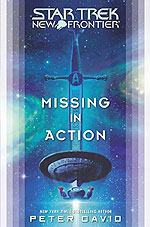 Com o que parece ser o fim da saga New Frontier, seu autor j tem com um novo projeto de Jornada nas Estrelas; Peter David est escrevendo o livro que ir comemorar os 20 anos de A Nova Gerao, no qual Picard e a tripulao da Enterprise-E enfrentam os Borgs numa batalha derradeira. E nada de Rainha Borg dessa vez, David promete. A Pocket Books criou outras sries exclusivas, como Star Trek Stargazer, a srie de eBooks Starfleet Corps of Engineers, as aventuras do capito Riker em Star Trek Titan e a novssima srie Star Trek Vanguard, mas todas sem o mesmo sucesso de New Frontier. De New Frontier, resta-nos a memria de 10 anos de aventuras incrveis, que, ao contrrio das sries de TV e filmes mais recentes da franquia, foram um estrondoso sucesso da critica e do pblico leitor. Os trekkies mais fanticos pedem h anos que New Frontier seja adaptada para a televiso, cinema, ou at mesmo desenhos animados (mas, ei, eu no sou trekkie). Mas como s Deus sabe o que se passa na cabea de Rick Berman, esse um sonho que est longe de se realizar. Com os rumores do cancelamento do filme The Beginning e o desinteresse da Paramount em produzir mais um filme com o elenco de A Nova Gerao e at mesmo outra srie de TV, o futuro de Jornada nas Estrelas nunca pareceu to incerto. |